Lesson 6: Branches and pull requests
What is a branch?
A branch is a separate copy of the project where you can make changes without affecting the main version. When the work is ready, you merge it back.
main: A───B───────────E (merge)
\ /
my-branch: C───D───┘mainis the official, working version.- You create
my-branch, make commits C and D, andmainis unaffected. - When you’re done, you merge the branch back into
main.
Why use branches? You can experiment safely, several people can work at once, and every change can be reviewed before it reaches main. The NV OSE SOP requires this for shared repos.
Naming: yourname/short-description, for example mwegener/add-age-filter.
What is a pull request (PR)?
A pull request asks to merge your branch into main. It’s where teammates:
- see exactly what changed
- leave comments on specific lines
- approve the change, or request changes
- merge it once it’s approved
The branch → PR → merge workflow
In GitHub Desktop
This walkthrough uses a real (small) change to this training’s README, from branch to merge.
1. Create a branch. Make sure you’re on main and have pulled. Click Current branch → New branch (or Branch → New branch…, Ctrl + Shift + N):
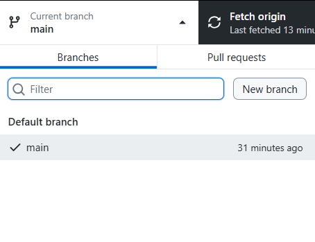
Name it yourname/short-description. It’s based on the branch you’re on (main). Click Create branch:
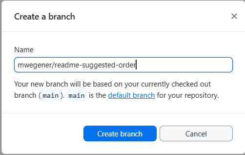
2. Make your changes and commit. Edit and save as usual. The commit button now names your branch: Commit to yourname/…:
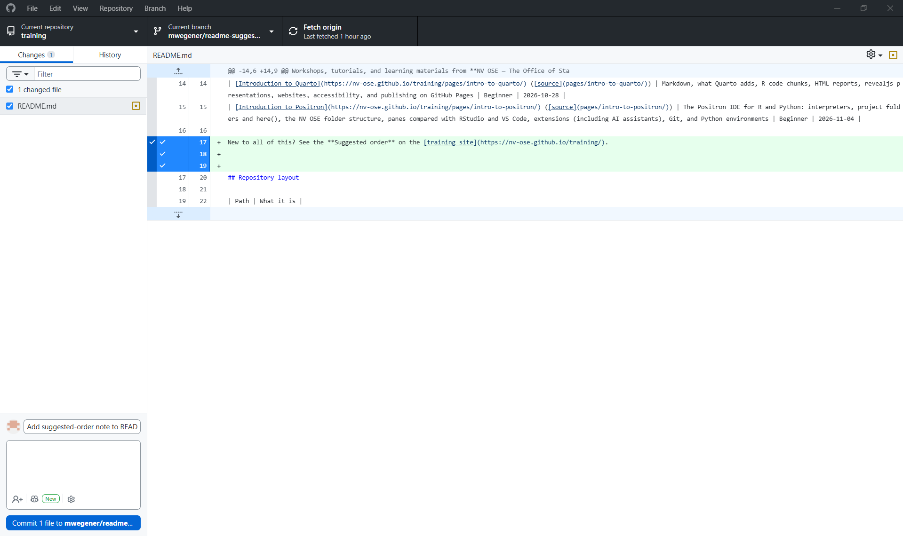
3. Publish the branch. A new branch exists only on your computer until you publish it:
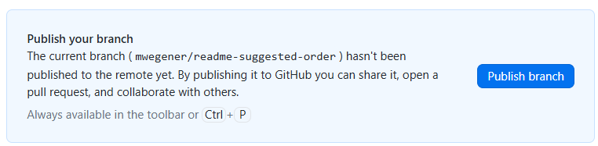
After that, push new commits on the branch with Push origin, as usual:
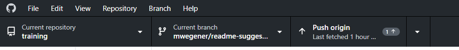
4. Preview and create the pull request. Click Preview Pull Request (or Branch → Create pull request, Ctrl + R):
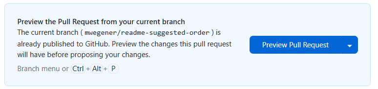
The preview shows exactly what will be in the pull request. Check it, then click Create pull request. Your browser opens on GitHub:
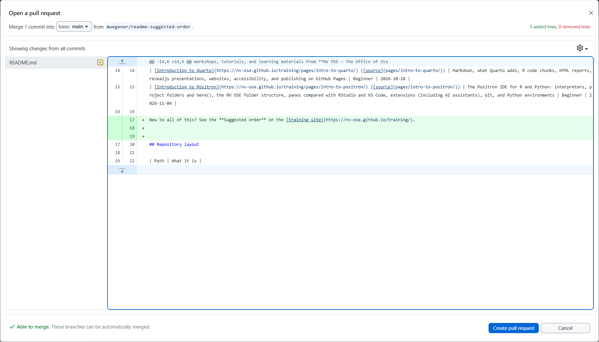
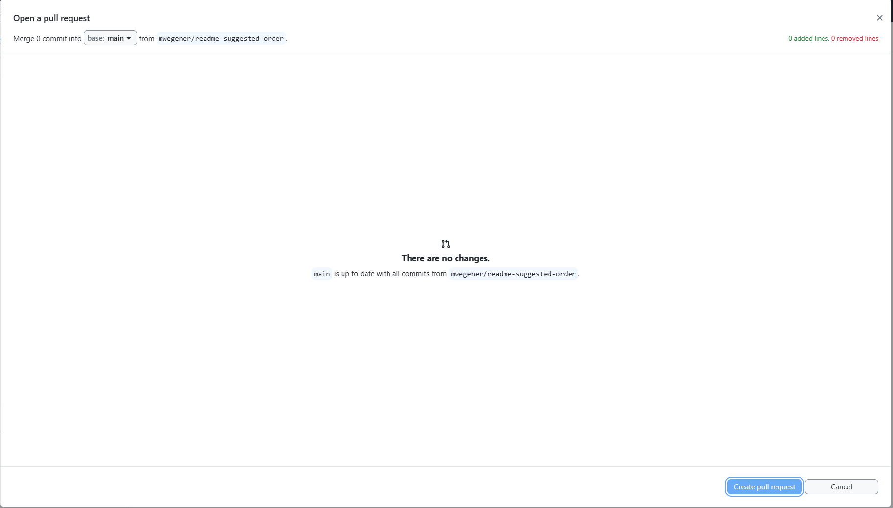
Your changes aren’t committed on this branch yet, so there’s nothing to compare. Check the History tab: your commit should be at the top. If it isn’t, commit (and push) on the branch, then preview again.
5. Fill in the pull request. Add a clear title and a short description (what changed and why). On the right, click ⚙️ next to Reviewers and choose who should review:
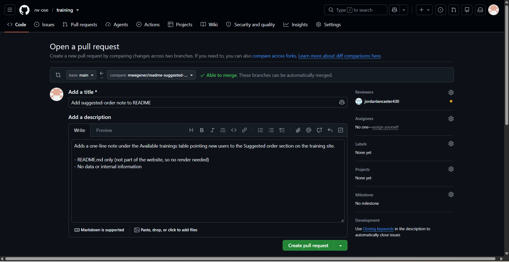
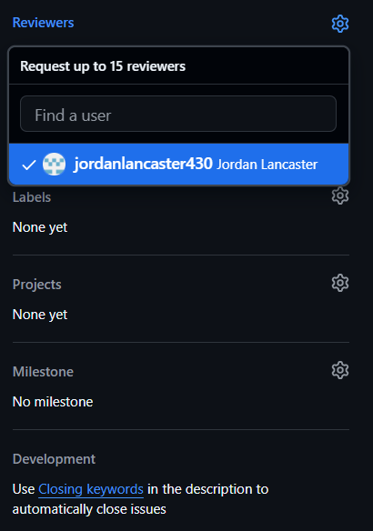
Click Create pull request. The reviewer is notified.
6. Merge after approval. When the reviewer approves, the pull request shows it, along with the Merge pull request button:
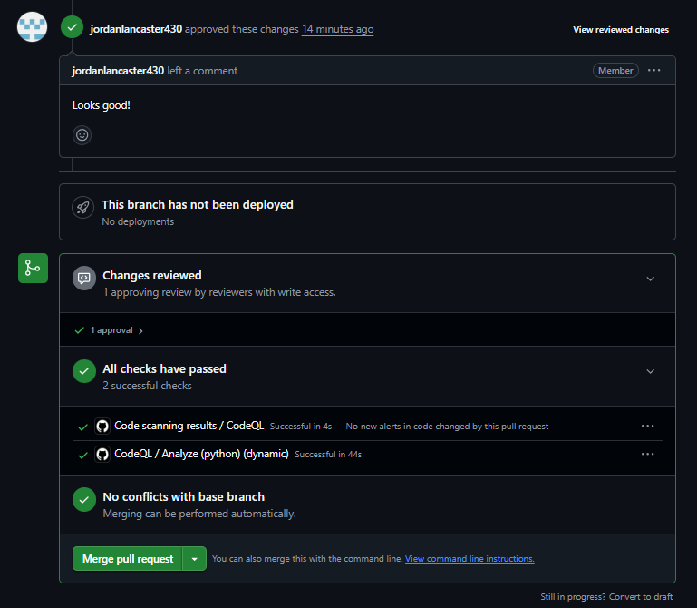
Click Merge pull request, then Confirm merge:
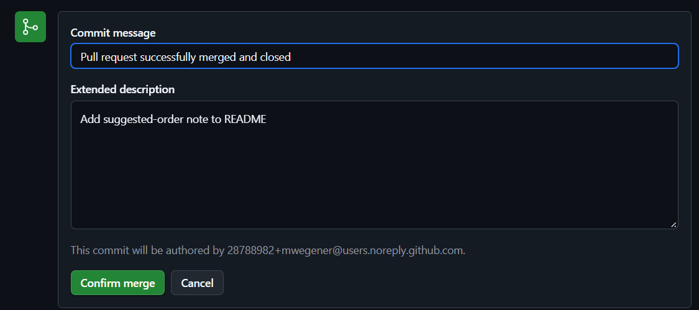
Then click Delete branch. The branch’s work is now in main, so the branch isn’t needed anymore:
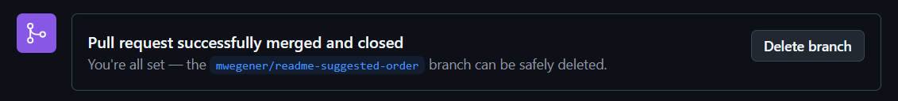
7. Back in GitHub Desktop, switch to main and click Pull origin to get the merged change:
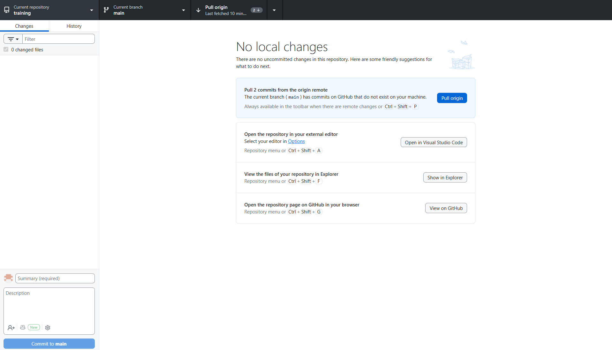
If GitHub Desktop offers to delete your local copy of the branch, say yes. Otherwise use Branch → Delete… while on another branch.
On the command line
git switch main
git pull
git switch -c mwegener/add-age-filter # Create and switch to a new branch
# ... edit, then:
git add .
git commit -m "Add age filter"
git push -u origin mwegener/add-age-filterThen open the PR on github.com. GitHub shows a yellow Compare & pull request banner. After it’s merged:
git switch main
git pull
git branch -d mwegener/add-age-filter # Delete the local branchOther branch commands:
git branch # List local branches (* marks the current one)
git branch -a # Include branches on GitHub
git switch branch-name # Switch to an existing branchReviewing a pull request
When you’re asked to review, you’ll get a notification and an email.
- Open the PR and go to the Files changed tab. Added lines are green, removed lines red:
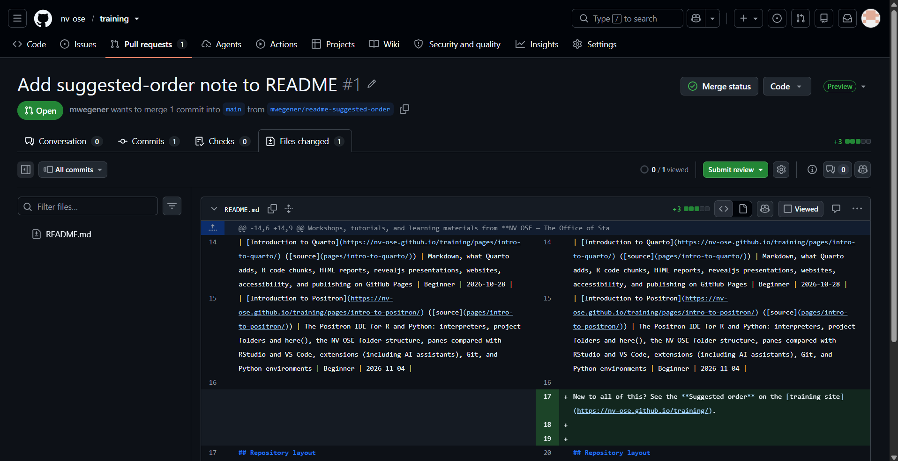
- To comment on a specific line, hover over it and click the blue +. Type your comment, then Start a review (to send all your comments together) or Comment (to post just this one):
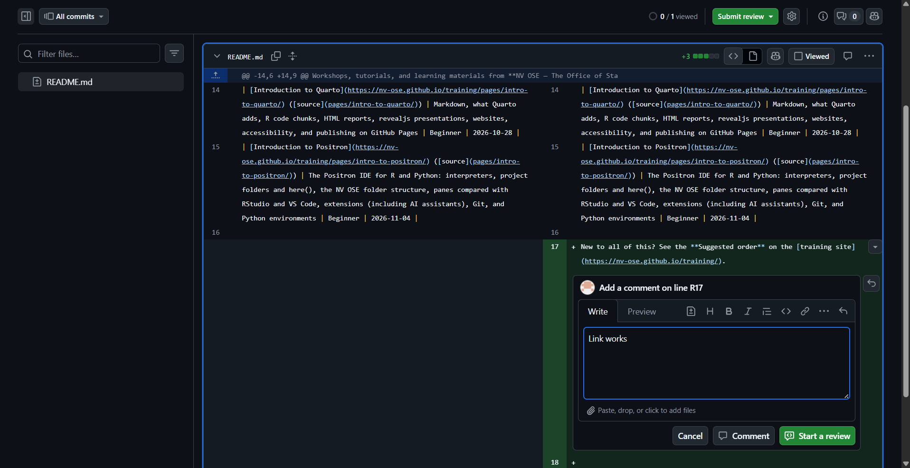
- Click Submit review (top right):
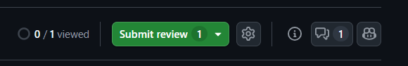
- Write a summary, choose Comment, Approve, or Request changes, and click Submit review:
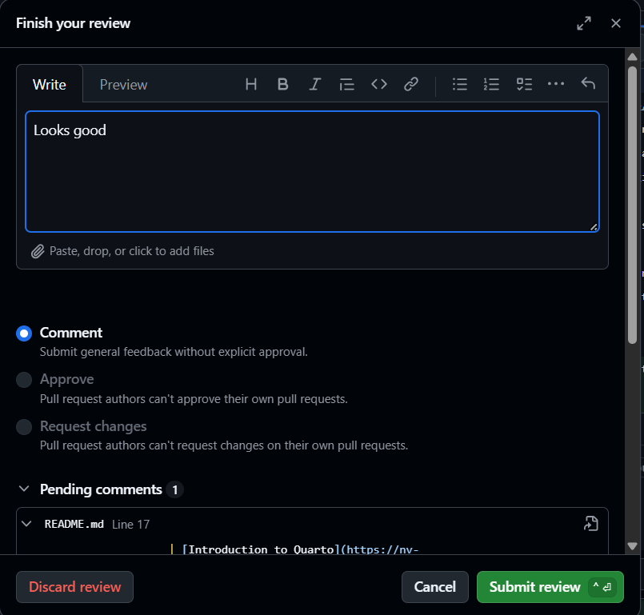
You can’t approve your own pull request. As the author, you’ll see Approve and Request changes greyed out. That’s why you ask a teammate to review.
When reviewing, ask: Does it work? Is it clear? Is there any sensitive data or any credential in it?
The Conversation tab shows the whole discussion: the description, review requests, comments, and approvals:
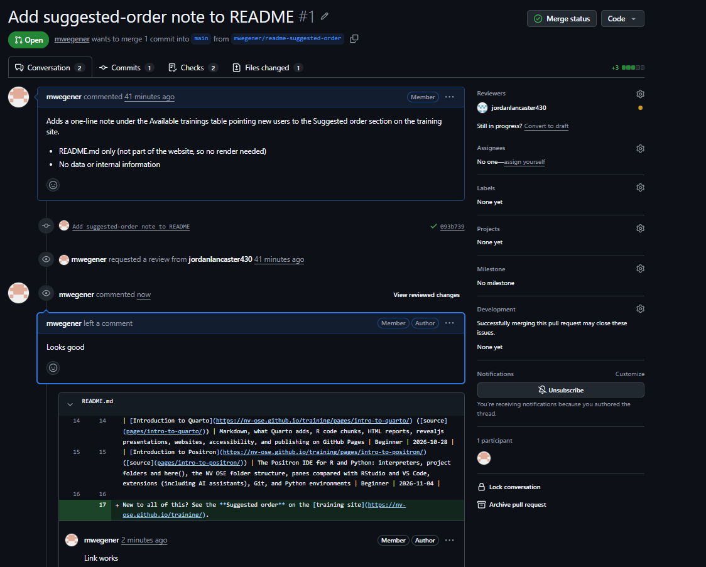
Until someone approves, the merge box shows Review requested. Merging is still possible, but in shared NV OSE repos, wait for the approval:
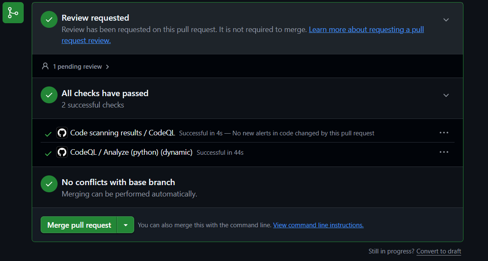
Merge conflicts
A conflict happens when two branches change the same lines of the same file. Git can’t decide which version to keep, so it asks you.
The file will contain markers like this:
<<<<<<< HEAD
age_groups <- c("0-17", "18-64", "65+")
=======
age_groups <- c("0-4", "5-17", "18-49", "50-64", "65+")
>>>>>>> mwegener/add-age-filterTo resolve it:
- Edit the file so it contains the version you want, and delete all of the marker lines (
<<<<<<<,=======,>>>>>>>). - Save the file, then stage and commit it. GitHub Desktop walks you through this, and GitHub can resolve simple conflicts in the browser.
To avoid conflicts: pull often, keep branches short-lived, and talk with your team about who is editing what.